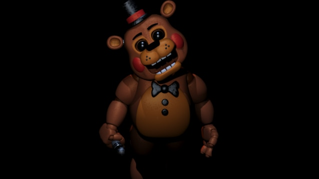
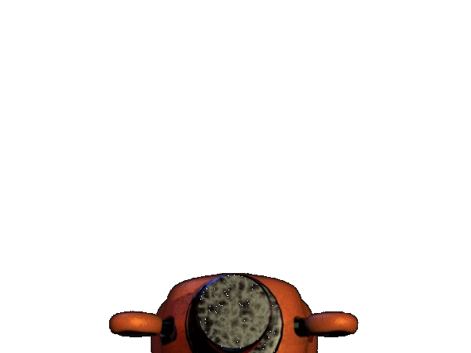

Aparência

A aparência de Toy Freddy é semelhante a aparência do original, Freddy Fazbear. Ele é um urso marrom com uma coloração mais clara em sua barriga, rosto e orelhas. Ele tem manchas pretas semelhantes a sardas, sobrancelhas pretas, olhos azuis, nariz preto e dentes em forma de blocos, como os de um humano.
